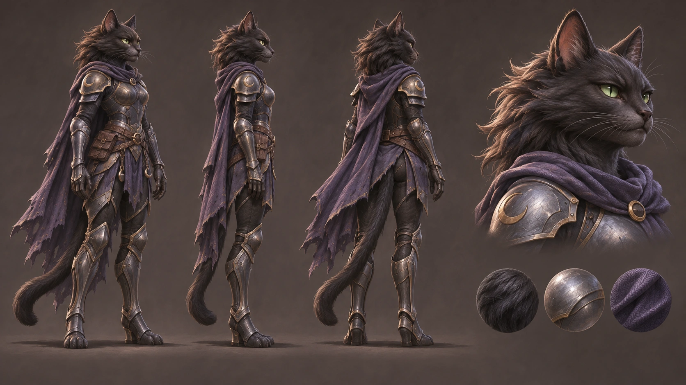

Мисти: художественный ориентир
Работаем над силуэтом, пропорциями, мордочкой, конструкцией брони и материалами. Этот лист задаёт направление для следующей модели.

Иллюстрированный концепт. Это не рендер готовой игровой модели.Предыдущий 3D-прототип отклонён и отключён в игре. Новая модель и анимации появятся после проверки пропорций, суставов и движения в игровом масштабе.